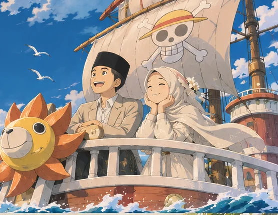

Ahmad
Putra dari
Bapak Rahman & Ibu Siti Aminah
Sebuah perjalanan menuju hari bahagia
THE WEDDING OF
AHAD · 20 DESEMBER 2026
↓ Jelajahi kisah kami
Assalamu’alaikum Warahmatullahi Wabarakatuh
Dengan memohon rahmat dan ridho Allah SWT, kami mengundang Bapak/Ibu/Saudara/i untuk menjadi bagian dari awal perjalanan kami menuju keluarga yang sakinah, mawaddah, dan rahmah.
“Dan di antara tanda-tanda kekuasaan-Nya ialah Dia menciptakan pasangan-pasangan untukmu...”
QS. Ar-Rum: 21 (kutipan terjemahan)Putra dari
Bapak Rahman & Ibu Siti Aminah

Putri dari
Bapak Ilyas & Ibu Nurhayati
Ahad, 20 Desember 2026
09.00 WIB – selesai
Gedung Serbaguna Contoh
Jakarta, Indonesia
Ahad, 20 Desember 2026
11.00 – 14.00 WIB
Gedung Serbaguna Contoh
Jakarta, Indonesia



Merupakan suatu kehormatan dan kebahagiaan bagi kami apabila Bapak/Ibu/Saudara/i berkenan hadir dan memberikan doa restu.
Wassalamu’alaikum Warahmatullahi Wabarakatuh
Ahmad & Aisyah · 20.12.2026